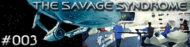

|

Escrito
por Margaret Armen & Alf Harris
Decker, Ilia e McCoy
investigam uma nave que est em rbita de um planeta desabitado.
Ao abordar a nave, eles descobrem que a tripulao se matou de
uma maneira brutal e selvagem. Mas como?
Enquanto isso, uma mina espacial detona prximo a Enterprise,
liberando uma energia que ataca os impulsos neurais da tripulao
transformado-os em selvagens. Decker, McCoy e Ilia retornam para a
nave e tentam neutralizar e reverter os efeitos antes que a nave
seja destruda.
Curiosidades
 "Gene
Roddenberry estava bem prximo dessa srie. Alf e eu fomos at
ele com trs histrias e no final 'The Savage Syndrome' a
que ele mais gostou, pois estava procurando histrias de Jornada
que [na poca] eram bem diferentes", conta Margaret Armen. "Gene
Roddenberry estava bem prximo dessa srie. Alf e eu fomos at
ele com trs histrias e no final 'The Savage Syndrome' a
que ele mais gostou, pois estava procurando histrias de Jornada
que [na poca] eram bem diferentes", conta Margaret Armen.
Margaret
Armen tambm escreveu os episdios da Srie Clssica "The
Gamesters of Triskelion" e "The Paradise Sydrome",
e o roteiro de "The Cloudminders", baseado em uma
histria de David Gerrold e Oliver Crawford.
Episdio
anterior | Prximo
episdio |